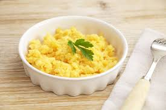

Perfect Scrumbled Eggs

Fluffy and delicious scrumbled eggs
Ingredients
- 3 cold eggs
- 1 tablespoon of butter
- Salt and pepper to taste
- Finely chopped chives
Instructions
- Crack the eggs directly into a cold saucepan or skillet. Add the cold tablespoon of butter. Do not season with salt yet, as it breaks down the eggs and makes them watery.
- Place the pan on high heat. Stir continuously with a rubber spatula, making sure to scrape the bottom. After 30 seconds, take the pan completely off the heat while continuing to stir for 10 seconds. Return to the heat. Repeat this on-and-off process 3 or 4 times.
- Keep stirring. After about 3 minutes, the eggs will start to clump and look like a thick, smooth custard.
- Take the pan off the heat completely. Immediately stir in the sour cream. This stops the cooking process instantly so the eggs don't get dry or rubbery.
- Now, add a pinch of salt, black pepper, and the chopped chives. Stir one last time and serve immediately over warm toast.
Enjoy a delicious breakfast!